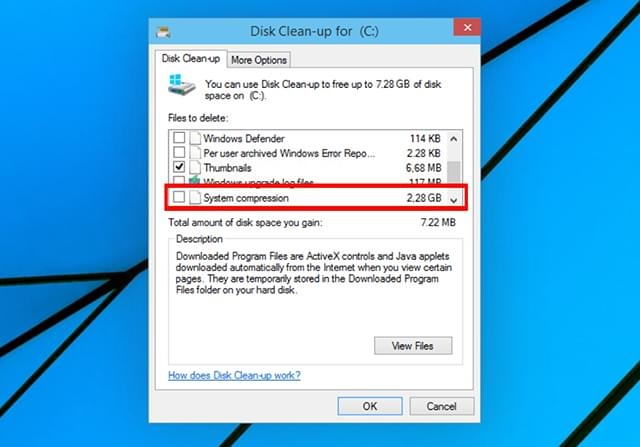
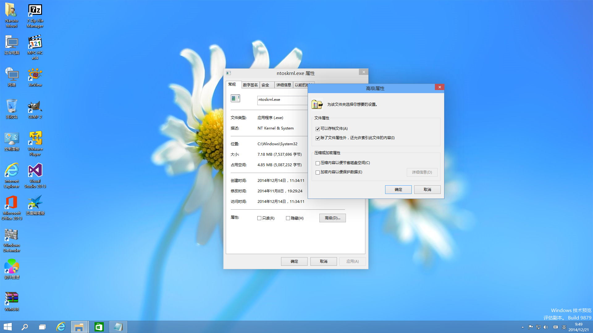

Compact OS 的历史和原理
Compact OS 是一个相当好用的能够大幅减少 Windows 系统分区占用的技术方案。 由于使用了和 WIM 文件中同样的压缩算法，在典型场景下可以让你的文件缩小为原来的三分之二甚至二分之一。 本文以尽可能简要的方式来介绍该功能的历史和原理。
历史

Compact OS 的前身为 Windows 10 Build 9879 在磁盘清理工具引入的 System Compression 清理项，效果相当不错。 虽然我记得在之后的 Windows 10 Insider Preview Build 就短暂消失了。直到 Windows 10, Version 1507 快发布的时候，微软正式在文档中以 Compact OS 的名字发布了该功能。

后来因为一些原因和自己认识的一些 Microsoft 员工聊天了解到 Compact OS 这个功能主要是为了能让 Windows 10 运行在当年流行的存储空间只有 32GB 的 Atom 寨板上面，没想到 Windows 10 正式发布以后， 这类设备越来越少，于是这个功能也显得越来越没必要了。
原理
和 Windows 8.1 Update 1 引入的 WIMBoot 功能一样，都基于文件系统过滤驱动。WIMBoot 和 Compact OS 的实现都在 Windows Overlay Filter 即 wof.sys 中。
虽然 Compact OS 和 WIMBoot 使用同样的 WIM 文件中支持的压缩算法，但是 WIMBoot 的压缩后的结果储存在 WIM 中，对应在文件系统上的文件仅是一个重解析点。而 Compact OS 则是运用了 NTFS 交替数据流特性， 虽然主文件流依然是一个重解析点，但是也增加了一个名为 WofCompressedData 的数据流存放压缩后的结果。
文件系统过滤驱动的作用主要是截取 Windows 系统其他应用的文件读写，当判断为是使用 WIMBoot 或者 Compact OS 压缩后的文件，则会按照存储方式进行解析，这样对于其他应用而已感知不到该机制的存在以解决了大部分兼容性问题。
Compact OS 相对于 WIMBoot 的优点在于前者比后者更加灵活，可以单独对一个文件进行压缩和解压缩操作。
后记
2014 年，还在上高二的我在远景发布了《浅谈Windows 10 Build 9879的磁盘清理的System Compression》， 这篇文章也是我的得意之作之一，详情可以阅读 https://bbs.pcbeta.com/viewthread-1567726-1-1.html。
虽然那篇文章算是一针见血地描述了其原理，如果不是当年能力有限，我应该能把用法也挖掘出来。 但是现在回过头来看看，写的还是不够成熟。本文的目的是把我之前写的那篇文章的内容进行归纳和扩充。
参考文献
- Compact OS 的文件和目录排除列表
- Compact OS 的使用方法
- https://docs.microsoft.com/en-us/windows-hardware/manufacture/desktop/compact-os
相关内容
Windows 研究笔记本博客所有文章除特别声明外，均采用 CC BY-NC-ND 4.0 协议 ，转载请注明出处！